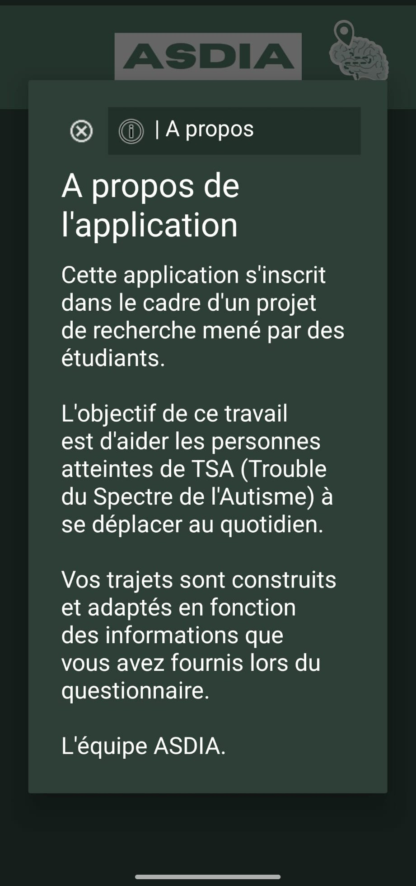
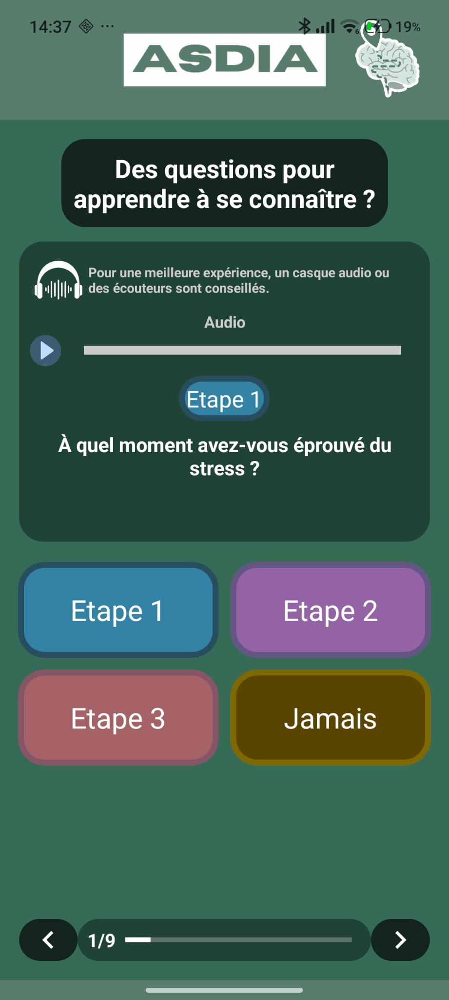
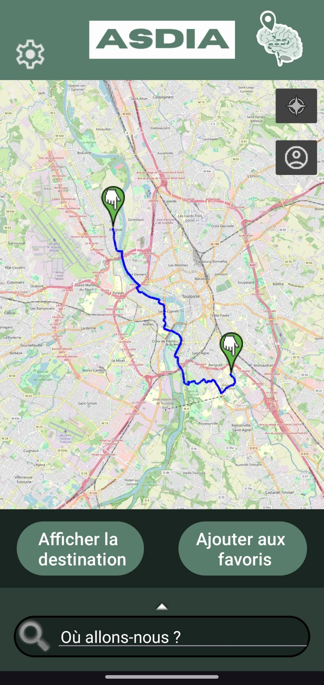
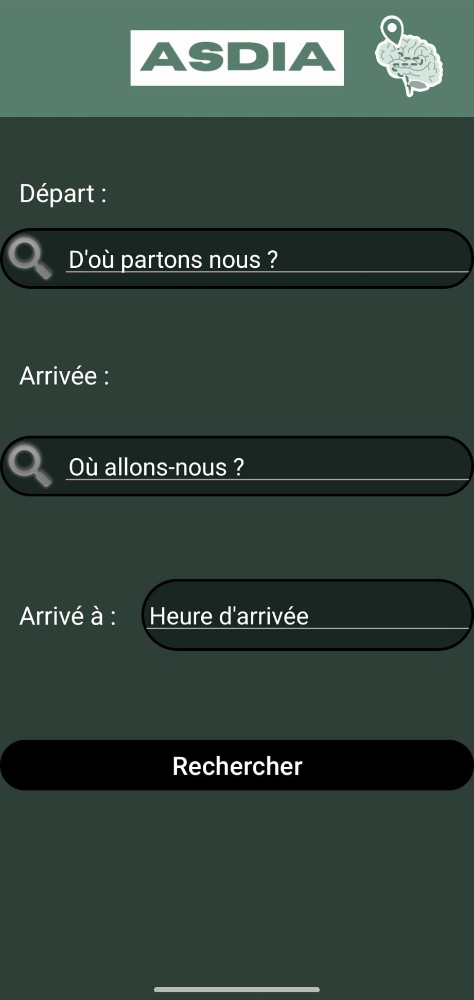
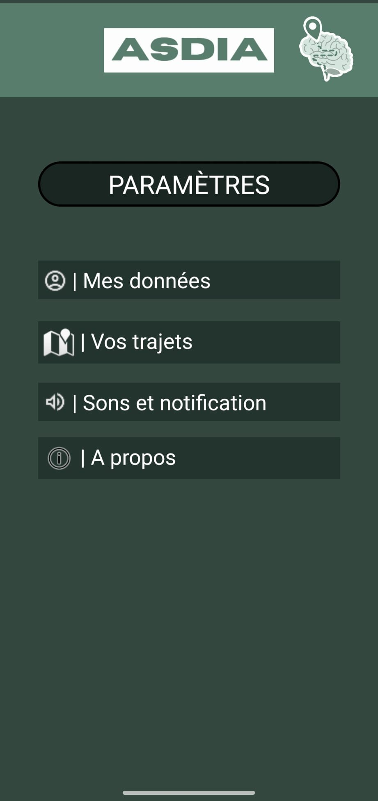
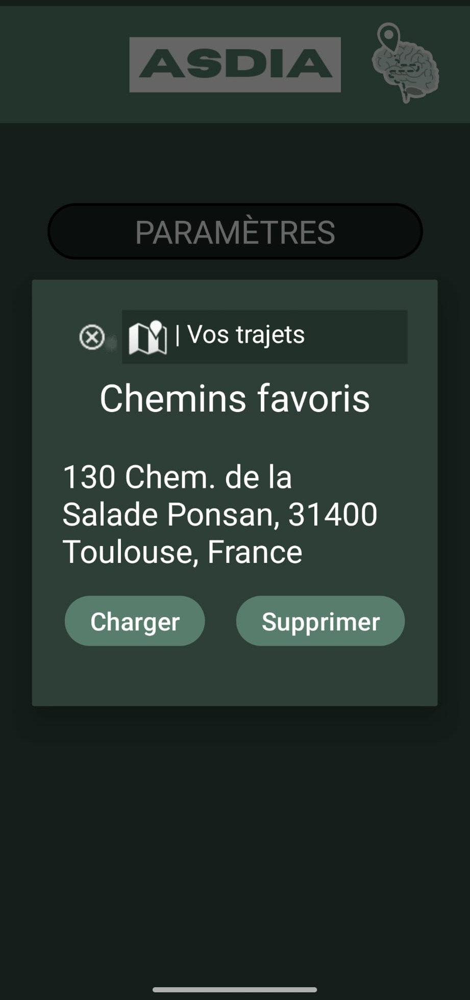
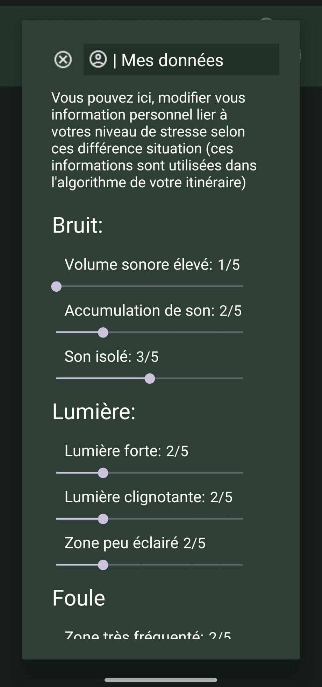
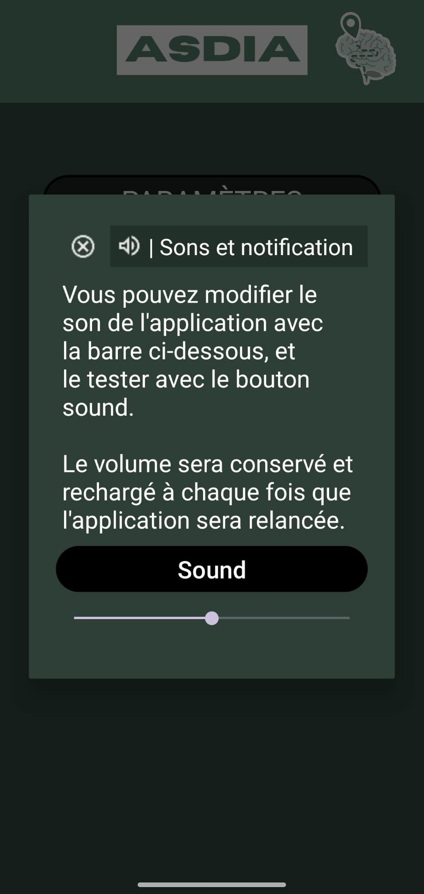

Autism Spectrum Disorder Itinerary Assistant
Une application permettant d'adapter les trajets aux sensibilités des personnes atteintes de TSA.
🧠 Stress
Analyse des facteurs de stress : bruit, foule, lumière et imprévisibilité.
📝 Quiz
Questionnaire interactif permettant de définir votre profil.
🗺️ Navigation
Calcul d'itinéraires adaptés à vos sensibilités.
Notre mission
Faciliter les déplacements des personnes autistes grâce aux données environnementales et à des algorithmes de routage intelligents.
Page d'accueil


Notre page d'accueil ainsi que toute l'application est basée
sur des tons de vert afin d'avoir une couleur rassurante
pour l'utilisateur.
Il a été décidé de prendre un cerveau comme logo afin de
représenter notre mission.
Deux boutons sont présent sur cette page, un pour donnée plus ample information à l'utilisateur sur le but du projets et de l'application. Et un autre bouton afin de lancé l'application (menant soit au Quiz si il s'agit du premier lancement de l'application soit directement à la carte).
Page de quiz
Notre quiz interactif vous permet de définir votre profil en répondant à des questions basées sur des situation réels afin de permettre à l'utilisateur de se mettre en condition et pouvoir indiquer un niveau de stresse lier à cette situation. Ces donnée ainsi collecter par se quiz, sont alors utiliser pour généré le chemin optimal évitant au maximum toute source de stresse pour cette utilisateur.
Ces information personnel, sont uniquement concerver sur l'appareil de l'utilisateur et peuvent être modifier à tout instant depuis les paramètre de l'application.

Page de la carte


Notre application utilise des algorithmes de routage intelligents (algorithme dijkstra) pour calculer des itinéraires adaptés aux besoin spécifique des utilisateur.
Les facteurs environnement pouvant changer d'une heure à une autres par exemple avec l'affluence de personne aux heures de pointe, nous avons donc décider de ne prendre en compte que l'heure d'arriver souhaiter par l'utilisateur ou ne pas la prendre en compte si l'utilisateur laisse le champs vide.
Toujours en prenant en considération la variance des facteurs environnementaux, notre équipe à décidé de permettre au utilisateur de pouvoir sauvegarder en local le trajet que notre algorithme leur à proposer afin de se conformer au besoin des différent utilisateur pouvant par exemple être stresser par un changement dans leur routine.
Page des paramètres
Notre application vous permet de personnaliser vos préférences et de gérer vos données.
En effet au sein des paramètre de l'application, tout utilisateur peut acceder à ces trajets sauvegarder, au information de l'application, à ces donnée (séparer en différente section, représentant les différent facteur environnement pouvant générer du stresse) et pouvoir les modifier et enfin à une section leur permettant de modifier les paramètre de son de l'application.
Etant donnée le temps impartie pour le développement, un assistant vocal d'aide à la direction était prévus au developpement pour aider les utilisateur lors de leur trajet, et les parmètre du son aurait concerné cette feature. Cependant par manque de temps, celle-ci n'as pas été implémenter. Laissant cette section des paramètre inutile pour le moment en attendant de futur mise à jour de l'application.



